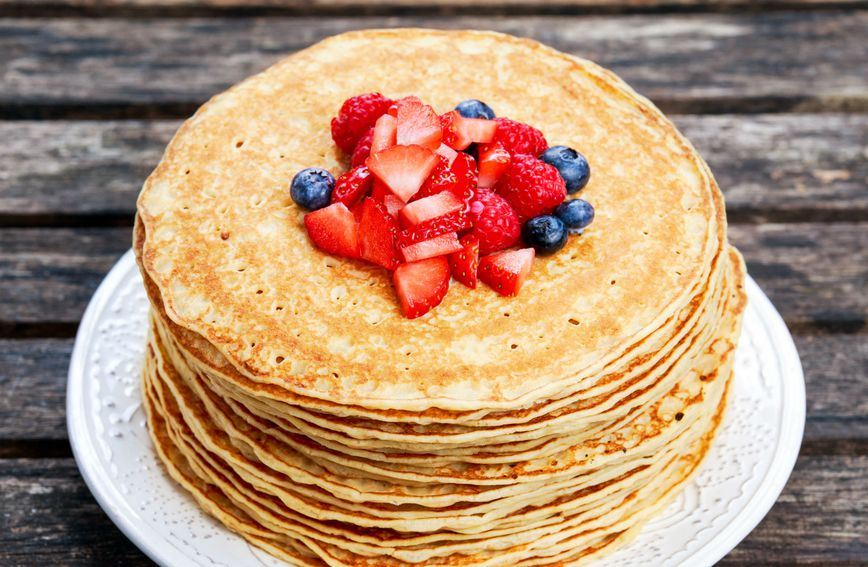

Recept za palačinke
Ovo su
posebne
i
fine
palačinke.
Sastojci
3 jaja
2 velike žlice šećera
250 g brašna
350 ml mlijeka
1 dl mineralne vode
malo soli
2 žličice ulja
pola žličice ruma
Priprema
Otvori pripremu
Gotove palačinke

Dodatno